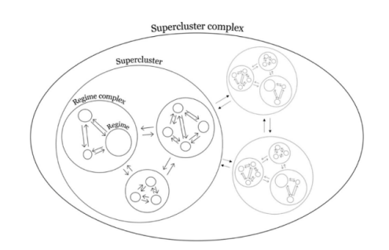
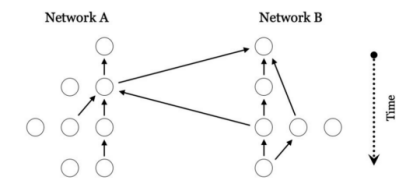

收录于合集 #全球治理 2个

作品简介
作者： Rakhyun E. Kim是荷兰乌得勒支大学助理教授，2013年奥兰·杨奖得主，主持欧洲研究理事会资助课题“国际环境条约机制间的问题转移：原因、后果与解决方案”，与弗兰克·比尔曼合著《地球体系治理架构：机制复杂性与结构转型》。
Jean Frédéric Morin是拉瓦尔大学全职教授，加拿大国际政治经济学研究主席，其研究重心是贸易、知识产权、环境保护和空间碎片领域的国际制度。
编译： 缪高意（国政学人编译员，约翰霍普金斯大学保罗尼采国际关系研究院硕士研究生）
来源： Kim, R. E., & Morin, J. F. (2021). Massive Institutional Structures in Global Governance. Global Environmental Politics , 1-023.
归档： 《国际关系前沿》2021年第9期，总第36期。
摘要
全球治理由数个基础机制组成。这些机制形成机制复合体，进而在广泛的政策领域产生了所谓的超星系团（superclusters，可以理解为大规模制度结构）。近年来，学者们探索了全球治理宏观结构及其演化历史，但却忽略了超星系团间的相互作用与共同演化。文章通过对贸易和环境领域全球治理的实证分析，提供了关于“超星系团”层面制度互动的创新视角，拓展全球治理研究的本体论前沿。作者构建并分析了一个动态网络模型，从而揭示全球治理中的超星系团复合体。超星系团复合体是由两个或多个相互关联的超星系团组成的庞大全球治理制度结构，它们对彼此的发展进程产生了可测量的影响。从理论上看，超星系团复合体是一种制度结构，它能够观察到贸易和环境政策领域自组织协调的程度。文章指出，超星系团复合体是重要的，但却少有学者注意的现象，值得更多的研究。
文章导读
01
引言
超星系团是中观机制复合体（mesoscopic regime complexes），存在于全球治理的各个政策领域之中。超星系团类似于所谓的全球治理架构，是活跃在全球治理所有政策领域（如健康、安全、投资等）的大型制度体系。以全球环境治理为例，全球环境治理超星系团即构成全球环境机制及机制复合体的数千项国际环境协定。
文章通过超星系团的研究扩展全球治理的本体论视野。具体言之，文章研究了超星系团如何相互作用并在彼此的进化过程中发挥塑造作用，以证明超星系团及其复合体对于理解全球治理结构和动力的重要性。相较于传统的单一制度网络分析法，本文采用复合制度网络分析法以分析超星系团复合体。文章建立了相对简单的复合网络模型，该模型由694项全球贸易协议和2731项全球环境协议组成，其中2305项引用在其条约文本中。
文章的结构如下：首先，简要介绍超星系团的定义，及本文的写作内容、研究方法和目的。其次，回顾全球治理研究中关于制度结构的研究，并提出将超星系团嵌入更大的复合体中的命题。再次，详细阐述了复合网络模型，并论证使用条约引用作为制度互动代理的合理性。从次，文章分析了全球贸易和环境治理中的超星系团。最后，文章提出了后续研究方向并总结全文。
02
文献综述：从超星系团到超星系团复合体

图1
长期以来，全球治理学者都在关注制度间相互作用形成的结构以及这些结构如何在更高的组织层次上相互作用（见图1）。虽然现有文献中有大量关于全球治理基本制度及制度复合体间相互作用的研究，但作者认为，少有学者关注到了治理超星系团层面上的复杂相互作用。然而，最新的实证材料挑战了将治理超星系团视为单一独立结构的传统认知。作者指出，在全球治理各领域的机制复合体中，外部因素对单一机制复合体内部的影响值得关注。
03
复合网络分析模型

图2
作者借用网络科学中复合网络科学的框架，以分析全球治理中的超星系团复合体（由两个或多个超星系团组成）。复合网络框架有助于理解多个网络如何相互连接、分析它们之间的相互作用以及确定和解释它们之间关系的性质。
如图2所示，网络A和网络B通过各自的内生过程进化，但它们并不完全相互独立；相反，网络是交换资源和信息的开放体系。因此，一个网络的演变受到另一个网络的影响，这两个网络作为复合网络体系共同进化。通过相互作用，集体动力（如某些形式的共存或协调）得以实现。复合网络结构的特殊之处在于，即使两个网络内的动态不完全同步，两个网络也可能有同步效应。这种特性将复合网络与具有模块化结构的单一网络区分开来。
在全球治理中，国际协定之间的相互引用已成为普遍存在的现象。文章将引用概念化为国际协议之间的一种直接制度联系。作为制度联系，条约引用发挥着许多功能。一般来说，它们将一项协议的效力延伸到另一项协议。此外，当缔约方希望协调两种制度并解决从一种制度到另一种制度的负面溢出时，可能会出现引用。因此，援引条约表明，协议各方同意不以牺牲另一协议所涵盖的问题为代价，优先考虑更希望解决的问题。从这个角度看，引用对达成引用的协议和接受引用的协议有不同的影响。一方面，引用增强了引用制作协议的规范合法性。通过承认并减轻其对另一个制度溢出的负面影响，这些引用有助于使产生负面影响的制度合法化。另一方面，引用有利于提高国际协议的权威性。
04
全球贸易治理与环境治理案例
在复合网络框架基础上，文章绘制了全球贸易和环境治理超星系团，并进行网络分析。文章的复合网络模型包括自1947年以来通过的694项贸易协定和1867年以来通过的2731项环境协定，以及其中发现的2305项条约引文，包括自1963年以来创建的495项跨领域引文。
通过对全球贸易和环境治理超星系团及复合体的分析，作者指出，全球治理并不完全是碎片化的。无论是在结构上还是功能上，治理超星系团在一定的分工下继续保持不同，但至少其中一些超星系团似乎正在逐渐汇聚成一个连锁的更大组合，并在制度上相互联系。近年来全球治理制度的日益多元化并没有导致贸易和环境治理超级星团之间的分裂，而是使它们更加紧密地联系在一起。这是因为新制度带来了跨域链接，将两者连接起来，模块化程度降低就是明证。因此，作者推测，全球治理作为一个整体，可能在结构上越来越多中心，在功能上也越来越灵活，跨越各个不同的政策领域。
此外，作者的实证研究也带来了关于退出机制的新见解。在全球治理超星系团复合体中，突然和不连续的变化可能越来越难以实现。换言之，尽管民粹主义领导人可能会批评特定的国际机制度并将其置于危险之中，但他们不太可能撕开全球治理复杂的网络，即超级星团复合体。超星系团复合体允许渐进式适应，并提高全球治理的整体弹性和机制间的黏性，弱化了国际制度失效和全球治理衰落的可能性。
05
未来研究方向
本研究为未来全球治理超星系团的研究提供启示，作者在文末指出了未来可能的研究方向。
第一，超星系团复合体的出现及其演化。 为什么超星系团复合体看起来像这样？为什么有些复合体比其他复合体更容易聚合？此外，治理超星系团是否通过对彼此施加选择压力而共同进化。
第二，超星系团复合体对制度有效性的影响。 超星系团复合体是如何影响超星系团和其他嵌入机制的整体效能的？此外，它们的结构和动态对全球治理整体安排有什么意义？并且，超星系团复合体的出现是否有副作用同样是值得探讨的问题。
第三，超星系团的政策影响。 全球治理超星系团的复合结构意味着，没有一个单一的行动者或制度会对贸易与环境的关系产生变革性的影响，无论影响是积极还是消极。因此，管理关系和提高制度效率需要了解全球治理，因为全球治理是一个由相互关联的超星系团及其复合体组成的复杂网络。
06
结论
文章对于全球治理研究的贡献主要是两方面的。理论方面，文章提供了超星系团复合体的出现和发展的初步说明，以及全球治理中大规模制度结构的新研究议程。方法论方面，文章证明了复合网络方法在全球治理研究中的有效性。复合网络分析方法可应用于分析其他全球治理网络，如机制复合体。
文章的研究结果支持“孤立的全球治理时代已经结束”的观点。全球治理开放的制度体系间的复杂互动现在对每一个制度体系的结构和动态都产生了重大影响。因此，例如，不再能够完全通过内部因素或仅通过少数关键外部因素的影响来解释全球环境治理的总体绩效。任何旨在显著改善这一联系以充分协调贸易和环境政策的努力，都需要更好地理解超星系团复合体。
译者评述
全球治理是一个庞大而复杂的制度网络。在过去几十年的全球治理研究中，学者关注了全球治理的结构、演化进程和合法性权威等议题，但主要是集中在整体或单一领域的全球治理。绝大多数研究是在单一政策领域范围内的，研究某一领域的制度及制度互动。少有的关于跨领域的关注也集中于较少国际组织之间的互动。本文正是基于这一空白，在对全球制度复杂性关注日益增加的背景下，引入超星系团和超星系团复合体的概念，试图理解更广泛的不同领域机制复合体的关联，为跨政策领域的制度互动研究做出贡献。
文章使用了一个“华而不实”的概念——全球治理超星系团，这可能会被部分学者批评为玩概念。然而，作者对于什么是全球治理超星系团及超星系团复合体有清楚的解释，所以用一个吸人眼球的词语加以概括并没有什么问题。相较于概念本身，更值得思考的是作者提出的观点之于全球治理研究的启示性。作者基于网络科学中的复合网络分析模型，以全球贸易和环境治理的协议为例进行分析，聚焦于治理超星系团之间的空间，阐释跨网络效应。在此分析的基础上，全球治理的巨大网络必然是远远超过半数贸易与环境两个政策领域的，延伸到卫生、发展等等其他领域。总的来说，文章关注到了全球治理研究中一个较为空白且有意义的研究领域，提出了一个关于全球治理中大规模制度结构的新研究议程，具有启发性。
词汇整理
机制复合体 Regime complex
制度互动 Institutional interaction
区域性协定 Regional agreement
多边协定 Multilateral agreement
本体论 Ontological
审校 | 徐一君 黎开朗
排版 | 陆霜滢 彭雯昕
文章观点不代表本平台观点，本平台评译分享的文章均出于专业学习之用, 不以任何盈利为目的，内容主要呈现对原文的介绍，原文内容请通过各高校购买的数据库自行下载。

国政学人
支持学术公益与知识传播
微信扫一扫赞赏作者 __赞赏
已喜欢，对作者说句悄悄话
取消 __
发送给作者
发送
最多40字，当前共字
上一页 1/3 下一页
长按二维码向我转账
支持学术公益与知识传播
受苹果公司新规定影响，微信 iOS 版的赞赏功能被关闭，可通过二维码转账支持公众号。